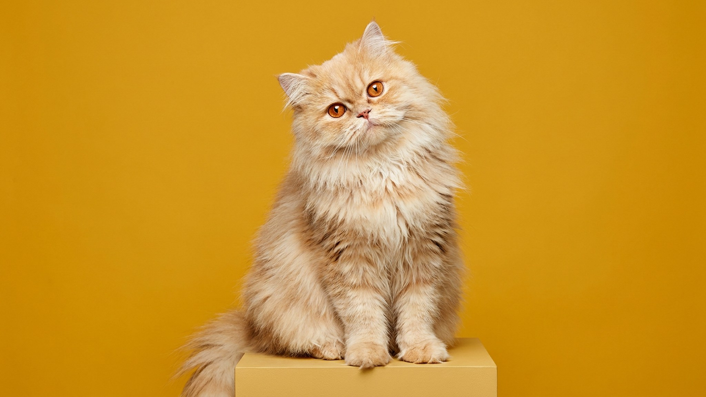

Вы видите круглую приплюснутую мордочку, плюшевую длинную шерсть и думаете: «Это перс». А это экзотическая длинношёрстная порода - и разница существенная. Её позиционируют как «кошку для тех, кто хочет перса, но попроще», и здесь есть доля правды - но уход всё равно нужен настоящий. Разберём, чем эта порода отличается от ближайших родственников, что требует внимания каждый день и кому она подойдёт.
🐾 Ваш питомец — экзотическая длинношёрстная кошка?
Заведите профиль в AnimaLife: приложение запомнит породу, возраст и вес и будет подсказывать по уходу именно для неё. Вопросы AI-ветеринару — круглосуточно и бесплатно.
Завести профиль → Завести в MAX →
У вас iPhone? AnimaLife есть в App Store
Экзотическую короткошёрстную вывели скрещиванием американской короткошёрстной с персом. Получили ту же персидскую голову и флегматичный характер, но с коротким и плотным мехом. Экзотическая длинношёрстная - это котята из тех же помётов, которые по генетике унаследовали ген длинной шерсти от персидской стороны. Фактически это полноправный перс по типу шерсти, но в корпусе экзота.
Миф, что длинношёрстный экзот требует меньше ухода, чем перс, живуч. На практике шерсть у них примерно одинаковой длины и плотности. Вот что нужно делать регулярно.
Экзотическая длинношёрстная - тихая, спокойная кошка с устойчивой нервной системой. Она не требует постоянного внимания, не шумит и не переворачивает квартиру. При этом общения хочет: ляжет рядом, будет смотреть на вас, придёт на руки, когда сама решит.
Порода хорошо подходит:
Активные люди, которые ищут кошку для игр и фокусов, разочаруются. Бегать за мячом по всей квартире - не её история.
Приплюснутая морда - главная особенность породы и главный предмет наблюдения. Укороченная морда у брахицефальных кошек влечёт анатомические особенности дыхательных путей. Это не болезнь, а строение, но оно требует внимания.
Обсудите с ветеринаром при первом визите: нет ли у кошки затруднённого дыхания в покое, хрипов или стридора. Плановые осмотры - раз в год для молодых животных, раз в полгода после 7 лет.
Поводы обратиться к врачу раньше срока:
Зубной ряд у брахицефалов тоже укорочен - зубы стоят теснее. Регулярная чистка зубов щёткой или зубными лакомствами и ежегодная проверка у ветеринара помогают контролировать ситуацию.
Материал носит информационный характер и не заменяет очную консультацию ветеринара.
🐾 У вас экзотическая длинношёрстная кошка?
AnimaLife соберёт уход под породу: к каким болезням есть склонность, что проверять по возрасту, чем кормить и когда пора к врачу. Бесплатно, прямо в мессенджере.
Собрать план ухода → Собрать в MAX →
У вас iPhone? AnimaLife есть в App Store
🐾 Понравился разбор?
Подпишитесь на канал — каждый день разбираем по одному тревожному симптому у кошек и собак: что в пределах нормы, а когда пора к врачу. Подпишитесь, чтобы не пропустить разбор, который может спасти здоровье вашего питомца.